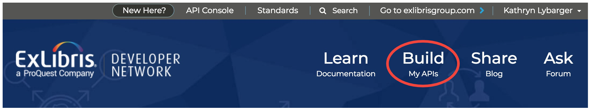
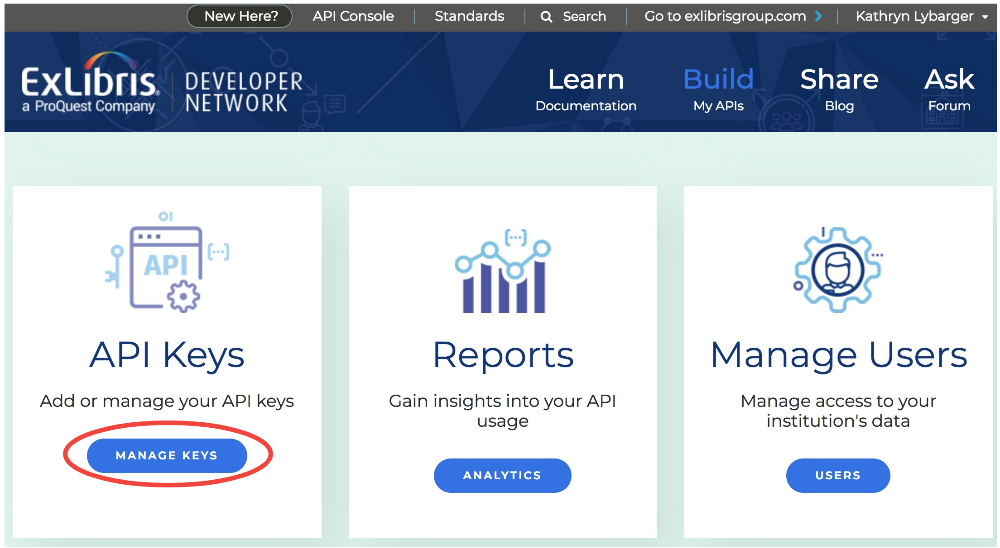
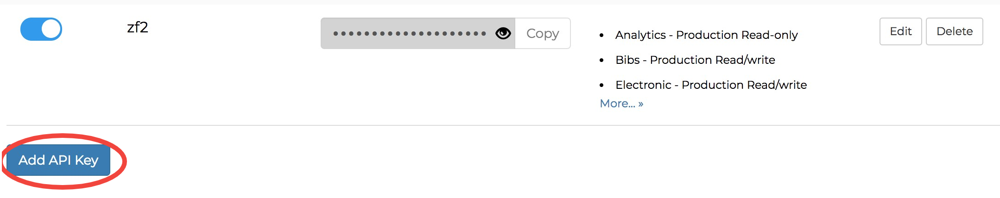
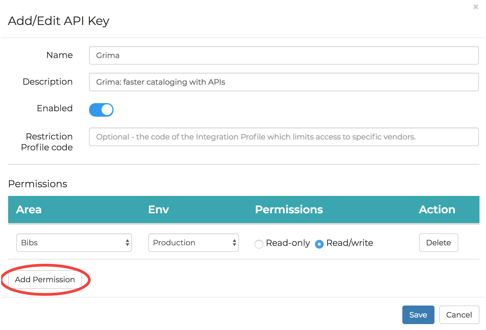
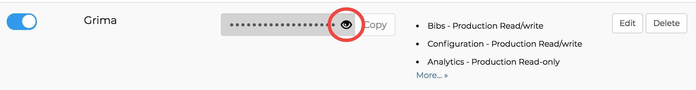

grima - whispering into alma's ear with APIs
This project is maintained by zemkat
Grima should have its own API key with appropriate permissions. To set up an API key, first login to Ex Libris Developer Network. If you do not yet have an account on Developer Network, you can create one for free. You may need to contact your system administrator to give your account access to your Alma database.
Once you are logged in to the Developer Network, click the Build area:

In the left box, click Manage Keys:

Scroll to the bottom past any existing keys, and click the Add API Key button:

Fill out this form with information like this. To add permissions for new API areas, click the Add Permission button, and for each one, select the Area, the Environment (production or sandbox), and the permissions you want (Read/write or Read-only). Click the Save button to continue.

The application should now be created, and will display on the applications list. To access the API key, click the eye symbol to make it visible, and then click the Copy button to get it into your clipboard.

The API key is a long string like:
l7xx9e21b7b5s3a4ie66xh69pcbx78cfx978
and is what Grima will ask for when you set up your institution.